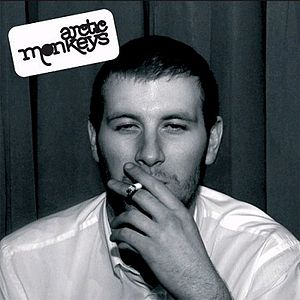
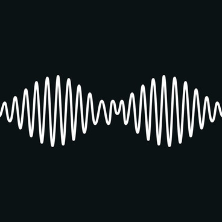
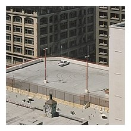

Sobre a banda
Arctic Monkeys é uma banda britânica de rock formada em 2002 nos subúrbios da cidade de Sheffield, na Inglaterra. O grupo é formado por Alex Turner (vocal, guitarra), Matt Helders (bateria, backing vocal), Jamie Cook (guitarra) e Nick O'Malley (baixo, backing vocal).
A banda é considerada uma das primeiras a ganhar atenção na internet, causando mudanças no cenário musical em como os grupos musicais pelo mundo promovem seu trabalho.
Seu primeiro álbum, Whatever People Say I Am, That's What I'm Not foi lançado em 2006 e foi aclamado pela critica e se tronou o disco de estreia que vendeu mais rápido na história das paradas de sucesso britânicas e, em 2013, a revista Rolling Stone o nomeou como o 30º melhor álbum de todos os tempos.
Breve histórico
O primeiro álbum do Arctic Monkeys foi o Whatever People Say I Am, That's What I'm Not foi lançado em 2006 e foi aclamado pela critica e se tronou o disco de estreia que vendeu mais rápido na história das paradas de sucesso britânicas e, em 2013, a revista Rolling Stone o nomeou como o 30º melhor álbum de todos os tempos.
Em 2007, lançou o segundo álbum de estúdio Favourite Worst Nightmare , também aclamado pela critica e vencedor do prêmio de Melhor Álbum Britânico no Brit Awards de 2008. Em 2009, lançaram seu terceiro álbum, Humbug e em 2011 o quarto álbum, Suck It and See. Em 2013, alcançaram a popularidade mundial com o lançamento do álbum AM, que se tornou certificado de platina também nos Estados Unidos, emplacando hits como Do I Wanna Know? e R U Mine? e marcando o terceiro prêmio de Álbum do Ano no Brit Awards de 2014.
Após turnês de grande sucesso mundial e um breve hiato, a banda lançou em 2018 o álbum com maior mudança sonora e criativa da carreira, o Tranquility Base Hotel & Casino. Em 2022, a banda lançou seu sétimo album, The Car.
Ao todo, o grupo venceu sete prêmios Brit Awards – incluindo a categoria "Melhor Grupo Britânico" e três de "Melhor Álbum Britânico" – e foram também nomeados para três Grammy Awards. Eles ainda venceram um Mercury Prize em 2006 com seu disco de estreia. A banda já foi headliner de vários festivais pelo mundo, incluindo o de Glastonbury, em 2007 e 2013.
Conquistas e realizações
| Premiação | Categoria | Anos |
|---|---|---|
| Grammy Awards | Melhor álbum de música alternativa | 2024, 2019 e 2007 |
| Melhor performance de rock | 2024, 2019 e 2015 | |
| Performance de música alternativa | 2024 e 2023 | |
| Melhor performance de rock instrumental | 2007 | |
| Brit Awards | Álbum Britânico do ano | 2007, 2008 e 2014 |
| Melhor grupo Britânico | 2007, 2008, 2012, 2014, 2019 e 2023 | |
| Melhor revelação Britânica | 2006 | |
| Melhor performance ao vivo | 2008 | |
| Melhor artista Britânico de rock | 2023 |
Melhores músicas Arctic Monkeys
Álbum: Whatever People Say I Am, That's What I'm Not (2006)
- "I Bet You Look Good on the Dancefloor"
Lançamento: 17 de outubro de 2005 - "When the Sun Goes Down"
Lançamento: 16 de janeiro de 2006
Álbum: Favourite Worst Nightmare (2007)

- "Brianstorm"
Lançamento: 2 de abril de 2007 - "Fluorescent Adolescent"
Lançamento: 4 de julho de 2007 - "Teddy Picker"
Lançamento: 3 de dezembro de 2007
Álbum: Humbug (2009)

- "Crying Lightning"
Lançamento: 6 de julho de 2009 - "Cornerstone"
Lançamento: 16 de novembro de 2009 - "My Propeller"
Lançamento: 22 de março de 2010
Álbum: Suck It and See (2011)

- "Don't Sit Down 'Cause I've Moved Your Chair"
Lançamento: 30 de maio de 2011 - "The Hellcat Spangled Shalalala"
Lançamento: 15 de agosto de 2011 - "Suck It and See"
Lançamento: 31 de outubro de 2011 - "Black Treacle"
Lançamento: 23 de janeiro de 2012
Álbum: AM (2013)
- "R U Mine?"
Lançamento: 27 de setembro de 2012 - "Do I Wanna Know?"
Lançamento: 19 de junho de 2013 - "Why'd You Only Call Me When You're High?"
Lançamento: 11 de agosto de 2013 - "One for the Road"
Lançamento: 9 de dezembro de 2013 - "Arabella"
Lançamento: 10 de março de 2014 - "Snap Out Of It"
Lançamento: 9 de junho de 2014
Álbum: Tranquility Base Hotel & Casino (2018)
.jpg)
- "Four Out of Five"
Lançamento: 13 de maio de 2018 - "Tranquility Base Hotel & Casino"
Lançamento: 23 de julho de 2018
Álbum: The Car (2022)
- "There’d Better Be a Mirrorball"
Lançamento: 30 de agosto de 2022 - "Body Paint"
Lançamento: 29 de setembro de 2022 - "I Ain't Quite Where I Think I Am"
Lançamento: 18 de outubro de 2022